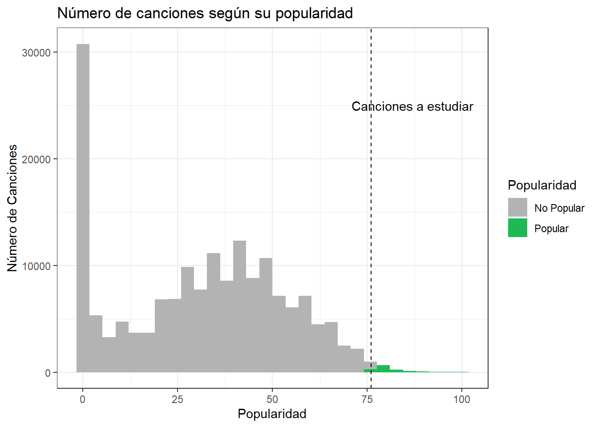

Introducción
Introducción
La música ha sido parte fundamental de la historia de la humanidad. “La música es una de las expresiones creativas más íntimas del ser, ya que forma parte del quehacer cotidiano de cualquier grupo humano tanto por su goce estético como por su carácter funcional y social. La música nos identifica como seres, como grupos y como cultura, tanto por las raíces identitarias como por la locación geográfica y épocas históricas.” (Angel, Camus y Mansilla, 2008: 18).
Desde que la existe la industria musical se han tratado de crear canciones que generen gran impacto en la sociedad, pues esto se podría traducir en beneficios monetarios en un periodo de tiempo cercano al estreno de la canción. Por esto puede ser importante para alguna empresa discográfica saber cómo hacer alguna canción exitosa, por lo tanto, podría ser relevante para estas compañías conocer cuales son las tendencias musicales, y los patrones que se repiten en las canciones que ya fueron exitosas.
Para entender mejor como han sido las tendencias musicales de los últimos años haremos un análisis de una base de datos de “Spotify”, con el fin de ver cuales son los factores que hacen que una canción sea popular, o que al menos aumentan las posibilidades de que lo sea.
En este informe tendremos cuatro secciones. La primera parte será para explicar cómo están clasificados los datos, y cuando fueron recolectados, pues la plataforma tiene canciones muy antiguas, mucho más que la plataforma de donde fueron sacados los datos. En la segunda parte dejaremos claro cuáles serán los métodos que usaremos para hacer en análisis. En la tercera parte haremos el análisis y mostraremos los resultados, a través de tablas y gráficos, enfocándonos principalmente en las reproducciones y su relación con las demás variables. Para finalizar, la cuarta parte será una conclusión, en la que clarificaremos cuales son las variables que más influyen en el posible éxito de una canción.
| Variable | Tipo | Descripción |
|---|---|---|
name |
caracter | Nombre de la canción |
id |
caracter | ID de la canción en Spotify |
artists |
caracter | Nombre del/los interpretes |
genres |
caracter | Género de la cancion (Variable única de data_by_genres.csv) |
year |
numérica | Año de lanzamiento |
release_date |
caracter | Fecha de lanzamientos (Año-Mes-Día) |
valence |
numérica | Que tipo de emociónes transmite la canción, más triste cerca de 0, más feliz cerca de 1 |
acousticness |
numérica | Que tan acustico es el sonido de la canción (precencia de instrumentos no electricos ni digitales), mas acústico cerca de 1, menos acústico cerca de 0 |
danceability |
numérica | Que tan bailable es una canción, más bailable cerca de 1, menos bailable cerca de 0 |
duration_ms |
numérica | Duración en milisegundos |
energy |
numérica | Intencidad perceptual de la canción |
explicit |
numérica | La canción tiene contenido explicito (Si=1,No=0) |
instrumentalness |
numérica | Cantidad de voces en la canción, más cerca está de 1.0, más instrumental |
key |
numérica | Tono de la canción |
liveness |
numérica | Probabilidad de que la canción haya sido grabada en vivo |
loudness |
numérica | Volumen de la canción |
mode |
numérica | Canción considerada como prioritaria por el artista o sello discográfico, se suele publicitar y recomendar más (Si=1, No=0) |
popularity |
numérica | Que tan popular es la canción |
speechiness |
numérica | Proporcion de tiempo que ocupan palabras habladas o cantadas en la canción |
tempo |
numérica | Tempo de la canción (velocidad) |
Figura 1
Es evidente que hay canciones que no sirven, en primera instancia, para el estudio que queremos hacer, por lo tanto, si queremos maximizar las probabilidades de que el producto sea exitoso debemos ver cuales son los que han llegado al resultado que estamos buscando, para ello veamos la Figura 2:
Vemos que si el requisito mínimo para considerar una canción exitosa, es que tenga un valor sobre 75 en el indice de popularidad, y a simple vista se ve que la cantidad de obras que llegan a este número son muy pocas y que de hecho la mayoria de las canciones, se quedan cerca del 0.